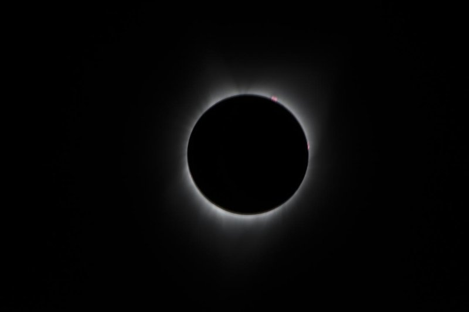

Page 3.2 ended with the Moon's ecliptic longitude known within about 40′ at every new and full Moon. A new Moon at the Sun's ecliptic longitude is not yet an eclipse, though: the Moon must also pass close enough to the ecliptic to cover the Sun, and a full Moon must pass close enough to it to enter the Earth's shadow.
With the Moon's ecliptic latitude and the sizes of the Sun, the Moon and the Earth's shadow, the Sun of Act II and the Moon of page 3.1 tell which new and full Moons are eclipses. Built that way, the model of this page finds every eclipse of the ten years from 2021 to 2030, and gives its time within about an hour and a half. Ptolemy's model, run forward nineteen centuries, still finds all but one of them.
1 · ObservationEclipses and the Moon's ecliptic latitude
To see which new and full Moons become eclipses, and how often, we take all of them over ten years of the reference sky, from 2021 to 2030. Of the 247, 38 are eclipses, 22 of the Sun and 16 of the Moon. We count a lunar eclipse only when part of the Moon enters the full shadow of the Earth, the umbra; the Moon also passes, more often, through the half-shadow around it, where it only dims slightly.
In the figure
- gold
- a solar eclipse
- red
- a lunar eclipse
- filled
- a total or annular eclipse
- open
- a partial eclipse
- grey dots
- the new and full Moons without an eclipse
The eclipses are those of the reference sky, found by the criteria of section 2 at each of its new and full Moons. They agree with NASA's list of the same ten years: the same 38 eclipses, each of the same kind (the hybrid eclipse of 20 April 2023, total along most of its path, counted as total), with its middle within two minutes of NASA's.
Every year has at least two solar eclipses, and 2029 has four, all of them partial. Lunar eclipses are fewer, in 2027 there was none. The eclipses come in groups, the eclipse seasons, of one to three eclipses each, about 173 days apart. Two seasons take 346 days, 19 days less than a year, so each season comes 19 days earlier in the year than the season a year before.

What decides which new and full Moons are eclipses is the Moon's ecliptic latitude. The Moon does not move along the ecliptic, as the Sun does, but on a path tilted against it, which takes it about 5° north of the ecliptic and 5° south each month: from 4.99° to 5.30° at the greatest, over 2021–2030. Twice a month it crosses the ecliptic, at the nodes. They are not fixed: they move westward along the ecliptic, and go round in 18.61 years.
The sky of August 2026 from Gemini to Virgo, seen looking south, with north up and east to the left, on the equatorial grid.
The Moon's path from 11 to 15 August, with a tick at the start of each day. It crosses the ecliptic near Regulus, 16 hours after it passed the Sun at the new Moon of 12 August. So close to the node, the new Moon covered the Sun: the total eclipse of that day.
In the figure
- ☉
- the Sun at the new Moon of 12 August
- ☋
- the node, where the Moon crosses the ecliptic going south
- grid
- right ascension every hour, declination every 10°
- stars
- every star brighter than magnitude 4.6; the larger, the brighter
Ptolemy reports that "the even more ancient [astronomers]", comparing lunar eclipses, found that they repeat after 6585⅓ days, in which there are "approximately 223 lunations, 239 returns in anomaly, 242 returns in latitude" (Almagest IV 2). A lunation is a synodic month. This period was well known in Babylonian astronomy, and is called the saros today. Exercise 2 finds it from the three months.
2 · ModelThe Moon's inclined circle
The ecliptic latitude
Ptolemy carries the Moon, with its epicycle, on a circle inclined to the ecliptic by 5° (V 12), whose nodes move westward. For the ecliptic longitude alone he leaves the tilt out, since "such a small inclination has no noticeable effect on the position in longitude" (IV 6).
To find the Moon's ecliptic coordinates we use the same methods as in act 1. Let $\Omega$ be the ecliptic longitude of the ascending node (☊ in the figures), where the Moon crosses the ecliptic going north, opposite the descending node ☋, and $F$ the argument of latitude, the Moon's angle along its circle from that node. To find the Moon's direction we start in the frame of its circle, where it is at $(\cos F, \sin F, 0)$, tilt the circle by the inclination $i$ about the line of nodes, and turn the line of nodes to $\Omega$, as on page 1.2:
$$\mathbf{m} = R_z(\Omega)\, R_x(i) \begin{pmatrix} \cos F \\ \sin F \\ 0 \end{pmatrix} = \begin{pmatrix} \cos\Omega\cos F - \sin\Omega\cos i\sin F \\ \sin\Omega\cos F + \cos\Omega\cos i\sin F \\ \sin i\sin F \end{pmatrix}.$$The third component is the sine of the ecliptic latitude. For the ecliptic longitude it is simpler to count from the node: turned back by $\Omega$, the vector is $R_z(-\Omega)\,\mathbf{m} = (\cos F,\ \cos i\sin F,\ \sin i\sin F)$, whose first two components give $\lambda - \Omega$, in the same quadrant as $F$:
For a small inclination $\beta \approx i \sin F$, within 9″ for $i = 5^\circ$.
The second formula says that the Moon's ecliptic longitude counted from the node, $\lambda - \Omega$, is not quite its angle $F$ along its own circle: an arc of the tilted circle, projected onto the ecliptic, comes out a little shorter or longer. Written as a difference, it becomes
$$\lambda - \Omega = F - \operatorname{atan2}(e\sin 2F,\ 1 + e\cos 2F) \approx F - e\sin 2F, \qquad e = \tan^2\frac{i}{2}.$$The derivation of the difference
Take the tangent of $\lambda - \Omega - F$, with $\tan(\lambda - \Omega) = \cos i\tan F$, and multiply its numerator and denominator by $\cos^2 F$:
$$\tan(\lambda - \Omega - F) = \frac{\cos i\tan F - \tan F}{1 + \cos i\tan^2 F} = \frac{(\cos i - 1)\sin F\cos F}{\cos^2 F + \cos i\sin^2 F}.$$With $\sin F\cos F = \tfrac12\sin 2F$, $\cos^2 F = \tfrac12(1 + \cos 2F)$ and $\sin^2 F = \tfrac12(1 - \cos 2F)$, and dividing above and below by $\tfrac12(1 + \cos i)$, this becomes
$$\tan(\lambda - \Omega - F) = -\frac{e\sin 2F}{1 + e\cos 2F}, \qquad e = \frac{1 - \cos i}{1 + \cos i} = \tan^2\frac{i}{2}.$$The denominator is positive, so the angle is the one of the formula above, and to first order in $e$ it is $-e\sin 2F$.
The difference has the form of the equation of centre of page 2.1, with $\tan^2(i/2)$ in place of the eccentricity and $2F$ in place of the anomaly. The greatest value of $(\lambda - \Omega) - F$ is $\arcsin\tan^2(i/2)$ = 6.55′, reached at $F = 45^\circ$.
Along its circle the Moon moves as it does in ecliptic longitude on page 3.1: a uniform mean motion, corrected by the equation of anomaly. Its mean argument of latitude is $\bar F = \bar\lambda - \Omega$, and its true argument of latitude is $F = \bar F + q$, with the same $q$ as the ecliptic longitude. Ptolemy computes it in the same way (IV 9).
The mean argument of latitude grows by $n_F$ a day: the Moon's mean motion $n$, plus the motion of the node, which moves westward, towards the Moon, by 0.053° a day. The Moon therefore comes back to the same node a little sooner than to the same ecliptic longitude: after 27.21 days, the draconitic month of page 3.1, instead of 27.32.
The model of this page computes the Moon's ecliptic longitude as on page 3.1, $\lambda = \bar\lambda + q$, as if the Moon moved along the ecliptic itself. Subtracting $\Omega$ gives $\lambda - \Omega = \bar F + q = F$: the model takes the Moon's angular distance from the node measured along the ecliptic to be the same as its angular distance measured along its own circle. That is the difference derived above, which the model neglects, as Ptolemy does.
The model's ecliptic longitude is therefore off by up to 6.55′, little beside the epicycle's own error of 40′ at new and full Moon. The difference vanishes at the nodes, so it is smaller still where eclipses happen: within about 18° of a node, it stays under 4′.
In the figure
- purple
- the Moon's circle, its inclination drawn three times larger
- red arc
- the Moon's ecliptic latitude $\beta$
At a new Moon the Moon has the Sun's ecliptic longitude, so the model gives its argument of latitude as $F = \lambda_\odot - \Omega$, the Sun's angular distance from the ascending node. At a full Moon the Moon is opposite the Sun, at the ecliptic longitude $\lambda_\odot + 180^\circ$. The centre of the Earth's shadow, which points away from the Sun, is there too, so $F = \lambda_\odot + 180^\circ - \Omega$, the angular distance of the shadow's centre from the ascending node.
Whether a new or full Moon is an eclipse therefore depends mostly on where the Sun is relative to the line of nodes, as at the new Moon of 12 August 2026 where Figure 3 opens, a total eclipse with the Sun and the Moon together near ☋. The sizes of the next section do the rest.
The Sun moves away from a node at $n_\odot + (n_F - n) = 1.0386^\circ$ a day, its own motion plus the node's motion towards it. It comes back to the same node after the eclipse year,
$$Y_\text{e} = \frac{360^\circ}{n_\odot + n_F - n} = 346.620 \text{ days}.$$The eclipse year also follows from two of the Moon's months. In a draconitic month $P_d$ the Moon makes one turn counted from the node, so it moves away from the node at $n_F = 360^\circ / P_d$ a day. In a synodic month $P_s$ it makes one turn counted from the Sun, so it moves away from the Sun at $n - n_\odot = 360^\circ / P_s$ a day.
The angle from the node to the Sun is the angle from the node to the Moon minus the angle from the Sun to the Moon, so it grows at the difference of the two rates, $n_F - (n - n_\odot)$, which is the Sun's motion from the node above. Dividing by 360°,
$$\frac{1}{Y_\text{e}} = \frac{1}{P_d} - \frac{1}{P_s},$$and with $P_d = 27.21222$ and $P_s = 29.53059$ days this gives the same 346.62 days. Half an eclipse year, 173.31 days, is the interval between the eclipse seasons of section 1.
The shadow and the parallax
How close to a node the Sun must be depends on the sizes involved, as seen from the Earth's centre: the apparent radii $s$ of the Moon and $s_\odot$ of the Sun, and the horizontal parallaxes $\pi$ of the Moon and $\pi_\odot$ of the Sun, the angles under which the Earth's radius is seen from each. At its mean distance the Moon has $s = 15.5'$ and $\pi = 57.0'$; the Sun has $s_\odot = 16.0'$ and $\pi_\odot = 8.8''$.
Seen from the Earth's centre O, the Earth's radius placed at the Moon's distance subtends the angle $\pi$, and the cone narrows by $s_\odot - \pi_\odot$ over that distance, so the umbra's radius is $u = \pi - (s_\odot - \pi_\odot)$, to first order in these small angles.
The derivation of the umbra's radius
Let $R$ and $R_\odot$ be the radii of the Earth and the Sun, and $d$ and $d_\odot$ the distances of the Moon and the Sun from O. The Moon's horizontal parallax $\pi$ is the angle at the Moon M under which the Earth's radius is seen. The line from M that grazes the Earth touches it at T, where it is square to the radius OT, so the right angle of the triangle OTM is at T, on the Earth's surface:
The same triangle with the Sun in place of the Moon gives $\sin\pi_\odot = R / d_\odot$, and the triangle with its right angle on the Sun's surface, seen from O, gives $\sin s_\odot = R_\odot / d_\odot$. Treating each of these small angles as equal to its sine, $s_\odot = R_\odot / d_\odot$, $\pi_\odot = R / d_\odot$ and $\pi = R / d$.
The ray of Figure 4 leaves the Sun's edge, $R_\odot$ from the axis, and grazes the Earth's edge on the same side, $R$ from the axis, a distance $d_\odot$ further on. It therefore comes closer to the axis by $R_\odot - R$ over $d_\odot$, and makes with the axis the angle
$$\frac{R_\odot - R}{d_\odot} = s_\odot - \pi_\odot,$$the angle at the tip of the shadow. Behind the Earth the ray keeps this angle, so at the Moon's distance it is $R - (s_\odot - \pi_\odot)\,d$ from the axis. That is the umbra's radius there, and seen from O it subtends
$$u = \frac{R - (s_\odot - \pi_\odot)\,d}{d} = \frac{R}{d} - (s_\odot - \pi_\odot) = \pi - (s_\odot - \pi_\odot).$$The Earth's atmosphere makes the shadow a little larger. NASA's eclipse tables use Danjon's rule, adding 1% to $\pi$, and so do we:
At the mean distances $u = 41.7'$, 2.69 times the Moon's radius. At a full Moon the Moon's centre is $|\beta|$ from the shadow's centre, so there is a lunar eclipse when the two discs overlap, $|\beta| < u + s$, and a total one when the Moon is wholly inside, $|\beta| < u - s$. The fraction of the Moon's diameter inside the umbra is the eclipse's magnitude.
A solar eclipse is seen only where the Moon's shadow falls on the Earth. Seen from the Sun, the Earth is a disc, and the Moon's shadow crosses it as two circles about one axis: the penumbra, where the Moon hides part of the Sun, and inside it the much smaller umbra, where it hides all of it (Figure 5a, drawn as the Earth is seen from the Sun).
Parallax gives their place and size. Take an observer $\gamma$ Earth radii north of the Earth's centre, measured square to the line of sight ($\gamma$ is negative to the south). Seen from there, the Moon is shifted south by $\gamma\pi$ and the Sun by $\gamma\pi_\odot$, so the Moon comes closer to the Sun by $\gamma(\pi - \pi_\odot)$, and the angular distance between their centres is
$$\left|\beta - \gamma(\pi - \pi_\odot)\right|.$$It is zero, and the observer sees the Moon's centre on the Sun's, standing on the shadow's axis, at
$$\gamma = \frac{\beta}{\pi - \pi_\odot}.$$Each Earth radius away from the axis adds $\pi - \pi_\odot$ to the distance between the centres. The two discs overlap, and the observer sees a partial eclipse, while that distance is less than the sum of their radii, $s + s_\odot$: up to $(s + s_\odot)/(\pi - \pi_\odot)$ Earth radii from the axis. That is the penumbra's radius, the same in every direction across the line of sight, so the penumbra is a circle about the axis.
The Earth's disc reaches from $\gamma = -1$ to $\gamma = 1$. If the axis falls within it, $|\beta| < \pi - \pi_\odot$, the eclipse is central. Otherwise the observer nearest the axis is at the Earth's edge, $\gamma = \pm 1$, where the Sun and the Moon are on the horizon and the distance between their centres is $|\beta| - (\pi - \pi_\odot)$. So the Moon covers part of the Sun from some place on the Earth when that distance is less than $s + s_\odot$:
A central eclipse is total if the Moon, seen from where the axis meets the Earth, is larger than the Sun, and annular if a ring of the Sun stays visible around it.
The eclipse limits
A limit on $|\beta|$ becomes a limit on the Sun's angular distance from a node through $\sin\beta = \sin i \sin F$. The sizes change with the Moon's distance, from 356·400 to 406·700 km, and so do the limits: a lunar eclipse needs the Sun within 10.2° to 12.1° of a node, and a solar one within 16.4° to 18.3°. The Sun's own distance changes the limits by half an arcminute.
(a) new Moon: the Moon's shadow on the Earth
(b) full Moon: the Moon in the Earth's shadow
(c) the Moon's ecliptic latitude at the new Moon, against the Sun's angular distance from the node
In the figure
- black dot
- (a) the umbra, drawn larger than it is
- purple, dashed
- the Moon's path; in (a), seen from the Sun, the path of its shadow
- gold line
- the ecliptic
Ptolemy computes the same limits (VI 5). For the Moon at its least distance his lunar limit is 12°12′ (12.20°), where the nearest Moon of this page gives 12.1°. His solar limits are lopsided, 17°41′ with the Moon north of the ecliptic and only 8°22′ with it south, because he takes the parallax of observers in his own part of the world.
The eclipse seasons
At 1.0386° a day the Sun takes between 31.5 and 35.3 days to cross the solar limits around a node, more than a synodic month, 29.53 days. At least one new Moon falls while it crosses, so every passage of the Sun by a node brings a solar eclipse, and every year at least two. When a new Moon falls near the start of the passage, the next can fall near its end, and the season has two solar eclipses, both partial, as in June and July 2029.
The lunar limits take only 19.7 to 23.4 days to cross, less than a month, so a full Moon can miss them. For example both seasons of 2027 have no lunar eclipse.
Ptolemy reasons in the same way about the intervals between eclipses (VI 6). In six months the Moon's argument of latitude grows by 184°, a little more than half a turn, so an eclipse at one node can be followed by an eclipse at the other six months later.
In the figure
- gold
- new Moons, and the band of the solar limits
- red
- full Moons, and the band of the lunar limits
- large
- an eclipse: filled, total or annular; open, partial
- lighter
- how far the limits widen when the Moon is nearest
3 · FitThe parameters of the inclined circle
Eclipses happen only at new and full Moon, where the crank of page 3.2 moves the Moon by a few arcminutes at most, so we can keep the ecliptic longitudes already fitted to the Moon on page 3.1 and to the Sun on page 2.3. The inclined circle adds three parameters: the motion in latitude $n_F$, the inclination $i$, and the argument of latitude at one moment, which places the nodes.
The motion in latitude
A rate is fixed best by two observations far apart, since the error of each is divided by the time between them, once an approximate rate has given the number of whole turns in between. Eclipses are such observations: each gives, through its magnitude, the Moon's distance from a node at a recorded moment. One year is far too short for this, so we take $n_F$ from the reference Moon (Meeus 47), as page 3.1 took its mean motions.
The inclination and the node
The inclination and the place of the nodes come from the ecliptic latitudes themselves: the latitudes near the nodes, $F = 0^\circ$ or $180^\circ$, fix the nodes, and the greatest ones, at $F = \pm 90^\circ$, fix the inclination. The new and full Moons of a year fall at every distance from the nodes, so they fix both, and they are the moments at which eclipses happen.
We therefore fit $i$ and the argument of latitude at J2000.0 by least squares to the reference Moon's ecliptic latitude at the 25 new and full Moons of 2026. The fit gives $i = 5.00^\circ$, and puts the ascending node at the ecliptic longitude 125.05° at J2000.0, where Meeus' mean node is at 125.04°.
The Moon's greatest ecliptic latitudes, which vary from month to month (section 1), would suggest a larger inclination. With 5.145°, their mean, the ecliptic latitudes at the new and full Moons of 2026 would be off by up to 10′, so what eclipses need is the inclination that holds at new and full Moon.
The sizes
To test the model alone, its eclipse limits should come from its own Sun and Moon. So we take the modern radii of the Earth, the Moon and the Sun, and the model's own distances, even though they vary more than the real ones (page 3.2). The Moon's distance is the epicycle's, on a deferent at the reference Moon's mean distance of 385·000 km. The Sun's is the eccentric's, whose radius is 1 au.
HistoryPtolemy's parameters
Ptolemy measured the inclination directly (V 12), from how close the Moon passed to the zenith of Alexandria when it was farthest north of the ecliptic, near the summer solstice. Refraction and parallax, which displace the Moon most near the horizon, almost vanish at the zenith, so the observation needs almost no correction. He found 5°, the inclination the fit to 2026 gives.
For the motion in latitude he relied on a period of Babylonian origin that Hipparchus used, a whole number of synodic months that also holds a whole number of returns of the Moon to the same node (IV 2, and Exercise 2). The period spans centuries, and over so long an interval the rate comes out very close to the reference Moon's.
4 · TestThe model against the eclipses of 2021–2030
The ecliptic latitude
To see the ecliptic latitude between the new and full Moons as well as at them, we judge it as we judged the ecliptic longitude, by an error curve, now of $\Delta\beta = \beta_\text{model} - \beta_\text{ref}$.
At the 25 new and full Moons of 2026, to which it was fitted, the ecliptic latitude is within 1.9′ of the reference Moon's, and at the other new and full Moons of 2021–2030, which the fit did not use, within 2.6′. Between them the error reaches 26′, but no eclipse happens there.
The eclipses
We let the model find its own new and full Moons, from its Sun and its Moon, and decide at each whether there is an eclipse and of what kind. All 38 eclipses of 2021–2030 come out, each of the right kind, and no other.
The model's new and full Moons fall typically three quarters of an hour from the middle of the real eclipse, and at worst about an hour and a half. Almost all of this is the epicycle's error in ecliptic longitude, up to 43′ at these eclipses, which the Moon takes well over an hour to cover relative to the Sun, and longer near its apogee, where it moves slowest. The Sun's error adds only a few minutes, and the middle of an eclipse need not fall exactly at the new or full Moon.
The table follows the four eclipses of 2026 one by one. The magnitudes of the two lunar eclipses test the ecliptic latitude and the shadow's size together. Their times test little, since page 3.1 fitted its epicycle to three eclipses, these two among them.
| Eclipse of 2026 | middle (TT) | the model | magnitude |
|---|---|---|---|
| 17 February, annular solar | 12:14 | annular, 35 min early | |
| 3 March, total lunar | 11:36 | total, 4 min late | 1.15 (model 1.15) |
| 12 August, total solar | 17:47 | total, 19 min early | |
| 28 August, partial lunar | 04:14 | partial, 7 min late | 0.93 (model 0.91) |
HistoryPtolemy's model against his eclipses
The eclipses Ptolemy observed himself are the three at Alexandria to which he fitted his epicycle (IV 6), so his times there check his arithmetic more than his model. His ecliptic latitudes, fixed by other observations, are a test, and they agree with the reference Moon's within a few arcminutes.
His times are within half an hour of the real ones, though his Sun and his Moon both lag well behind the real Sun and Moon. He placed his Moon, at each eclipse, opposite his own Sun, so it shares that Sun's error, and the two errors cancel in the time of the eclipse.
Run forward nineteen centuries, his model still finds all but one of the 38 eclipses of 2021–2030, several of them of another kind, and adds a few that did not happen: his motion in latitude, from the Babylonian period, was very nearly right. Its times, though, are off by hours, as his Sun and his Moon drift apart.
5 · ResidualThe times, the quarters and the place
An eclipse whose middle is predicted an hour and a half off is still the same eclipse, but a lunar eclipse can then be predicted for a time when the Moon is below the observer's horizon. These errors come from the Moon's ecliptic longitude at new and full Moon, which page 3.2 traced mostly to the epicycle's anomaly, fitted to only three eclipses and slightly out of phase.
The swings of Figure 7 between the new and full Moons have two causes. The model's argument of latitude carries the epicycle's error in ecliptic longitude away from the new and full Moons, the evection that page 3.2's crank corrects, and it shows most near the nodes, where the latitude changes fastest with $F$. The inclination also changes with the Moon's phase. At new and full Moon the Moon follows a circle inclined by 5.0°, at the quarters one inclined by about 5.3°, as the reference Moon's term $0.17^\circ \sin(2D - F)$ requires. Like the evection, it is an effect of the Sun's pull, and it is why the fit at the new and full Moons gives less than the mean of the greatest ecliptic latitudes.
The model also says only that a solar eclipse is seen somewhere on the Earth. Whether it is seen from a given city, and how much of the Sun is covered there, depends on the parallax at that place, which shifts the apparent new Moon from the true one. Ptolemy (VI 10) and Copernicus (De Revolutionibus IV 30) compute the eclipse for an observer, the harder part of the problem.
The Sun and the Moon each move by their own laws. The planets are tied to the Sun more closely: each of them turns back, in retrograde motion, once in every return to the same place relative to the Sun, the subject of page 4.1.
Exercises
At the model's new Moon of 12 August 2026, at 17:28 TT, the Moon's argument of latitude is $F = 169.7^\circ$; the model puts the Moon at 367·193 km and the Sun at 1.027 au. With $i = 5.00^\circ$, find the Moon's ecliptic latitude. Is a solar eclipse seen somewhere on the Earth? Is it central, and if so total or annular? Do the same for the next new Moon, 11 September, where $F = 199.7^\circ$ and the solar limit is 89.0′. Check the first in Figure 5, with the Sun at +10.3°: the same angular distance from a node, with the Moon north of the ecliptic as on 12 August.
$s = \arcsin(1737.4/d)$ and $\pi = \arcsin(6378.14/d)$ for the Moon at $d$ km; the Sun's $s_\odot$ is 959.63″ and $\pi_\odot$ 8.794″ at 1 au, inversely proportional to its distance. The shadow's axis passes $\gamma = |\beta|/(\pi - \pi_\odot)$ Earth radii from the Earth's centre.
$\beta \approx 5.00^\circ \times \sin 169.7^\circ = 0.894^\circ = 53.6'$, north of the ecliptic, 10.3° before the descending node.
At 367·193 km the Moon has $s = 16.3'$ and $\pi = 59.7'$; at 1.027 au the Sun has $s_\odot = 15.6'$ and $\pi_\odot = 8.6''$. The solar limit is $\pi - \pi_\odot + s + s_\odot = 91.4'$, more than 53.6′, so the eclipse is seen somewhere; the central limit $\pi - \pi_\odot = 59.6'$ is more than 53.6′ too, so it is central, with $\gamma = 0.899$. The axis meets the Earth $367193 - 6378\sqrt{1 - 0.899^2} \approx 364400$ km from the Moon, which is seen from there with a radius of 16.4′, more than the Sun's 15.6′: the eclipse is total. The eccentric puts the Sun too far in August (the real Sun was at 1.013 au, page 3.2); with the real distance the Sun's radius is 15.8′, and the eclipse is still total.
It was: NASA puts its greatest eclipse at 17:47 TT, 19 minutes after the model's new Moon. On 11 September, 19.7° past the node, $\beta = -101.0'$, beyond the limit of 89.0′, and there is no eclipse.
An eclipse repeats when a whole number of synodic months, which brings back the phase, is also a whole number of draconitic months, which brings back the Moon's place relative to the node. From $P_s = 29.530589$ days and $P_d = 27.212221$ days, find the shortest such periods with the continued fraction of $P_s/P_d$. Show that 223 synodic months are also very nearly a whole number of anomalistic months ($P_a = 27.554550$ days) and of eclipse years, and say what each agreement does to the repeated eclipse. Why did the ancient astronomers triple the period? How long does a series of repeated eclipses last? Hipparchus' relation of 5458 synodic months to 5923 returns in latitude (IV 2) is not among the convergents: how is it built from them?
$P_s/P_d = 1.0851958$. For the series, find how much $F$ changes in one period, and compare with the solar limit at the mean distances, 17.1°.
$P_s/P_d = 1.0851958 = [1; 11, 1, 2, 1, 4, 3, 5, \dots]$, whose convergents are 12/11, 13/12, 38/35, 51/47, 242/223, 777/716. The fraction $p/q$ means $q$ synodic months against $p$ draconitic months: 47 synodic months, 1387.94 days, miss 51 draconitic months by 2.7 hours, while 223 synodic months, 6585.321 days, miss 242 draconitic months by only 0.87 hours.
The same 6585.321 days hold 238.992 anomalistic months, 5.2 hours short of 239, so the Moon is back at the same distance and the eclipse has nearly the same size and kind. They hold 18.999 eclipse years, so the Sun is back near the same node, and the eclipse falls in the same season, 18 years and about 11 days later. The 0.321 of a day means that the Earth has turned 116° more, so the eclipse is seen a third of the way round the Earth to the west. Three periods, 19755.96 days, are almost a whole number of days. The ancient astronomers tripled the Periodic "in order to obtain a period with an integer number of days", the Exeligmos of 19756 days (IV 2), after which an eclipse also comes back to nearly the same geographic longitude.
Over one period $F$ changes by $-0.478^\circ$, so the Sun's place at the eclipse moves slowly across the limits. A series runs for about $2 \times 17.1 / 0.478 = 72$ periods, some 1300 years: the total eclipses of 1 August 2008 and 12 August 2026 and 23 August 2044 belong to one, and its eclipse of 3 September 2062 is only partial.
Hipparchus' 5458 months are $7 \times 716 + 2 \times 223$, and his 5923 returns $7 \times 777 + 2 \times 242$: a combination of the last two convergents, which misses by 0.72 hours, a little better than the Periodic's 0.87 hours.
In the reference sky the greatest eclipse of 20/21 October 134 came at 23:17 TT on 20 October. Find its local apparent time at Alexandria, 29.92° east of Greenwich, for an Earth that turns uniformly, with UT = TT. The equation of time was +13.4 min. Ptolemy computed the middle of the eclipse as one hour before midnight (IV 6): what value of $\Delta T = \text{TT} - \text{UT}$ does his time give? Compare it with the 9263 s of the reference sky.
Local mean time is UT plus the geographic longitude at 4 minutes a degree; apparent time is mean time plus the equation of time. Run the same steps backwards from Ptolemy's 23:00.
With UT = TT, 23:17 plus 119.7 minutes of geographic longitude is 01:17 local mean time, and with the equation of time 01:30 apparent time, an hour and a half after midnight: two and a half hours later than Ptolemy saw it.
Backwards from Ptolemy's 23:00 apparent time, local mean time is 22:47 and UT 20:47, so $\Delta T = 23\text{:}17 - 20\text{:}47 = 2.50$ hours. The reference sky's $\Delta T$ for that year is 9263 s, 2.57 hours, 4 minutes more: within the uncertainty of an ancient timing. Since AD 134 the Earth's rotation has fallen two and a half hours behind a uniform clock, and records like this one are how that is measured.
Sources
- Ptolemy, Almagest (transl. G. J. Toomer, 1984): IV 2 (the Periodic of 223 months and the Exeligmos, Hipparchus' 5458 months and 5923 returns in latitude, with Toomer's notes on the name saros and on the Babylonian origin); IV 6 (the inclination left out of the ecliptic longitude; the eclipses of 133–136); IV 9 (the argument of latitude and the motion in latitude); V 12 (the inclination of 5°); VI 5 (the eclipse limits); VI 6 (the intervals between eclipses); VI 10 (solar eclipses for an observer).
- Copernicus, De Revolutionibus (transl. E. Rosen), IV 30 (which new and full Moons are eclipses, and the apparent new Moon for an observer).
- R. Fitzpatrick, A Modern Almagest, § 6.3 (the ecliptic latitude, $\sin\beta = \sin i \sin F$) and § 7.4–7.6 (the criteria for eclipses and their frequency).
- J. Meeus, Astronomical Algorithms (2nd ed., 1998), ch. 47 (the reference Moon: its ecliptic latitude series, $F$ and the mean node) and ch. 49 (the mean new and full Moons).
- F. Espenak, NASA Goddard Space Flight Center, the decade tables of solar and lunar eclipses, 2021–2030 (eclipse.gsfc.nasa.gov, retrieved 30 October 2026), and F. Espenak and J. Meeus, Five Millennium Canon of Lunar Eclipses (NASA, 2009), for Danjon's rule; the $\Delta T$ of the reference sky is Espenak and Meeus' (NASA, 2006).
- Every number on this page:
tools/numbers/3.3-eclipses.js.